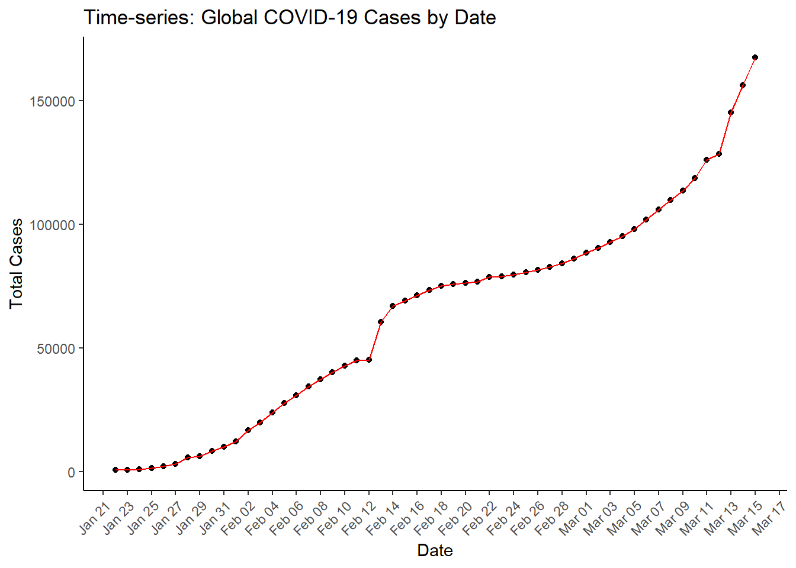
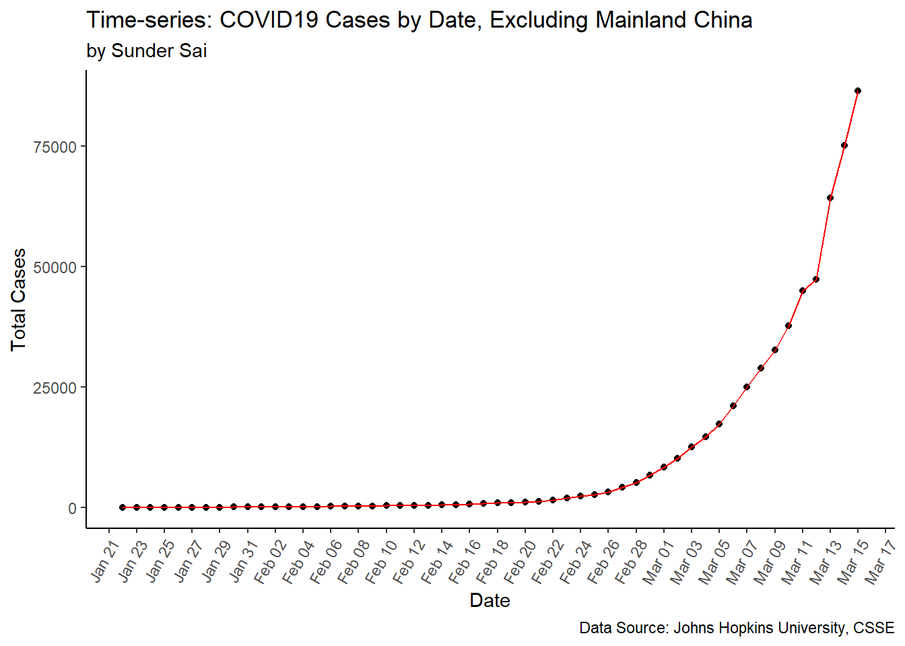
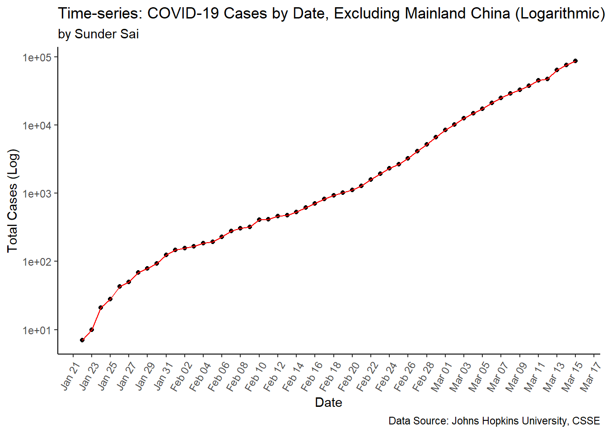
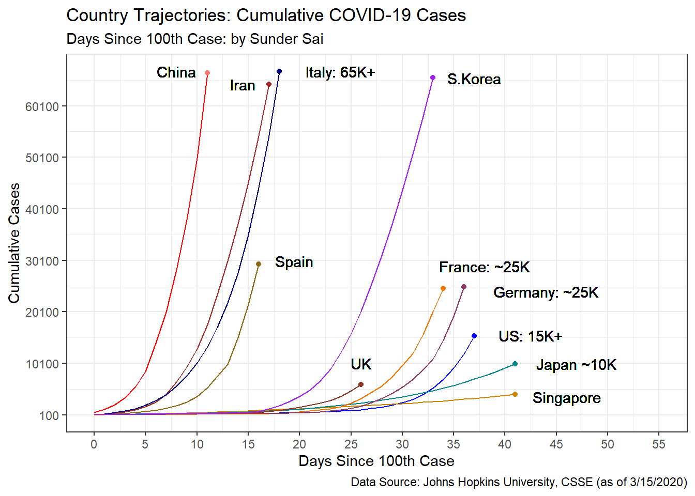
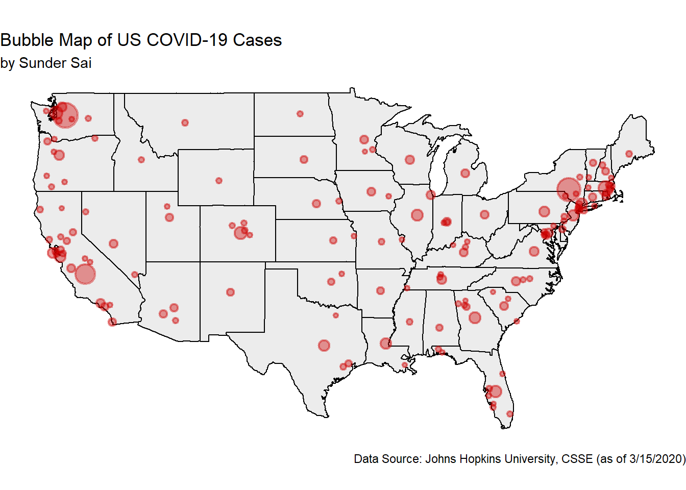

head and datatable functionsdatatable(head(corona_raw, 10))pivot_longer function as shown belowcorona_long <- corona_raw %>%
pivot_longer(cols = 5:58,
names_to= "date",
values_to="cases")
datatable(head(corona_long, 100))clean_names function, which is a part of the janitor packagerequire(janitor)
corona_clean <- clean_names(corona_long)
head(names(corona_clean))## [1] "province_state" "country_region" "lat" "long"
## [5] "date" "cases"lubridate package, I convert the format so that the variable is year-month-dayrequire(lubridate)
corona_clean$date_clean <- mdy(corona_clean$date)
head(corona_clean$date_clean)## [1] "2020-01-22" "2020-01-23" "2020-01-24" "2020-01-25" "2020-01-26"
## [6] "2020-01-27"select() function to choose date_clean and the cases variablesgroup_by functionsummarize() function I sum() the cases to get total_casesggplot2 through geom_pointand geom_line, adjusting the X-axis to be angled and the labels to represent month-day# Total global cases datas
date_by_case<- corona_clean %>%
select(date_clean, cases) %>%
group_by(date_clean) %>%
summarize(total_cases=sum(cases))
# first linear graph of date by total cases
ggplot(date_by_case) +
geom_point(aes(x=date_clean, y=total_cases))+
geom_line(aes(x=date_clean, y=total_cases), color="red") +
theme_classic()+
theme(axis.text.x = element_text(angle = 45, hjust=1))+
scale_x_date(date_labels="%b %d", date_breaks = "2 days")+
labs(title="Time-series: Global COVID-19 Cases by Date", x= "Date", y="Total Cases")
It may be useful to exclude Mainland China in order to understand the spread of the virus from its origin/epi-center. We can do this by using the filter() function and deselecting (!=) China
excluding_china <- corona_clean %>%
filter(country_region!="China") %>%
select(date_clean, cases) %>%
group_by(date_clean) %>%
summarize(total_cases=sum(cases))
# graph of cases by date excluding mainland
ggplot(excluding_china) +
geom_point(aes(x=date_clean, y=total_cases))+
geom_line(aes(x=date_clean, y=total_cases), color="red") +
theme_classic()+
theme(axis.text.x = element_text(angle = 60, hjust=1))+
scale_x_date(date_labels="%b %d", date_breaks = "2 days")+
labs(title="Time-series: COVID19 Cases by Date, Excluding Mainland China",
subtitle="by Sunder Sai",
caption="Data Source: Johns Hopkins University, CSSE",
x= "Date", y="Total Cases")
The graph above displays the total cases of COVID-19 by date, excluding Mainland China. We can observe that the cases follow a near logarithmic curve over time. This graph may be better represented logarithmically
* This can be accomplished by altering the y-axis using the scale_y_log10() argument
ggplot(excluding_china) +
geom_point(aes(x=date_clean, y=total_cases))+
geom_line(aes(x=date_clean, y=total_cases), color="red") +
scale_y_log10()+
theme_classic()+
theme(axis.text.x = element_text(angle = 60, hjust=1))+
scale_x_date(date_labels="%b %d", date_breaks = "2 days")+
labs(title="Time-series: COVID-19 Cases by Date, Excluding Mainland China (Logarithmic)",
subtitle="by Sunder Sai",
caption="Data Source: Johns Hopkins University, CSSE",
x= "Date", y="Total Cases (Log)")
By converting to a log-scale, the time-series chart above represents a better visualization of the cases across time

corona_clean as above downloaded from Johns Hopkins Universitycountry_region to the United States, and then remove extraneous locations for the US region that we would not want in our contiguous map.group_by the location variables, and then get the total_cases by using summarize()country_cases<- corona_clean %>%
filter(country_region=="US"
& province_state!="Diamond Princess"
& province_state!= "Alaska"
& province_state!= "Honolulu County, HI"
& province_state!= "Hawaii"
& province_state!= "Guam"
& province_state!= "Virgin Islands, U.S."
& province_state!= "Puerto Rico") %>%
select(province_state, lat, long, cases) %>%
group_by(province_state, lat, long) %>%
summarize(total_cases=sum(cases)) %>%
filter(total_cases>0) %>%
arrange(total_cases)
datatable(head(country_cases))mapdata package, we can get a base state-map of the US and map this using geom_polygon, we can then plot the longitude (x) and lattitudes (y) where the size of the points is the magnitude of thetotal_cases` for that pointalpha= argument to change the transparency and the stroke= argument to change the thickness of the bubble border.require(mapdata)
us_map <- map_data("state")
ggplot() +
geom_polygon(data = us_map, aes(x=long, y = lat, group=group), fill="gray", color="black", alpha=0.3)+
coord_fixed(1.3)+
guides(fill=FALSE)+
geom_point(data=country_cases, aes(x=long, y=lat, size=total_cases, fill="tomato1"),
color="red3", stroke=1.25, alpha=0.4)+
scale_size_continuous(range=c(1,8))+
theme_void()+
theme(legend.position="none")+
labs(title="Bubble Map of US COVID-19 Cases",
subtitle="by Sunder Sai",
caption="Data Source: Johns Hopkins University, CSSE (as of 3/15/2020)")